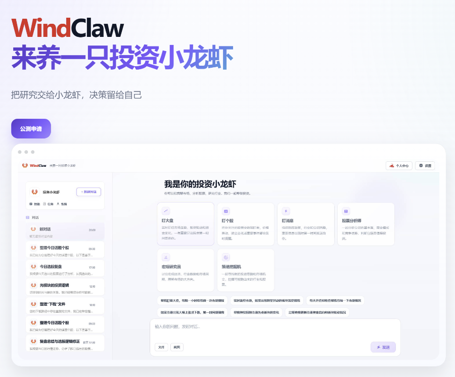
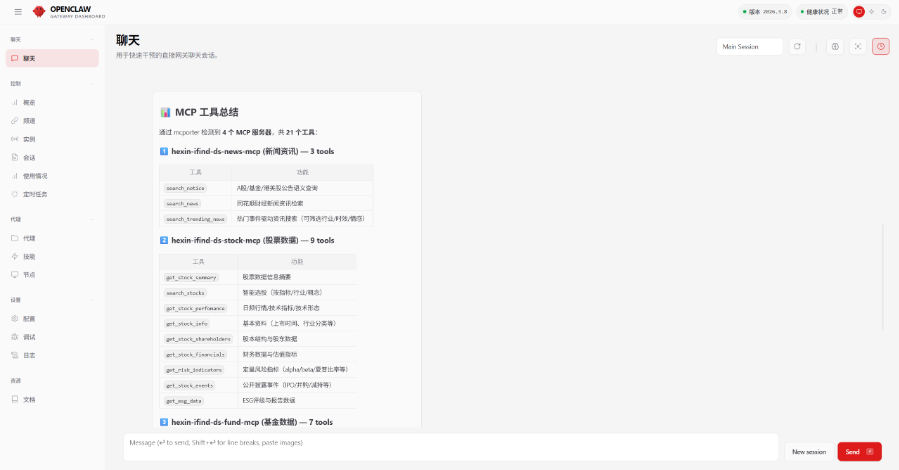
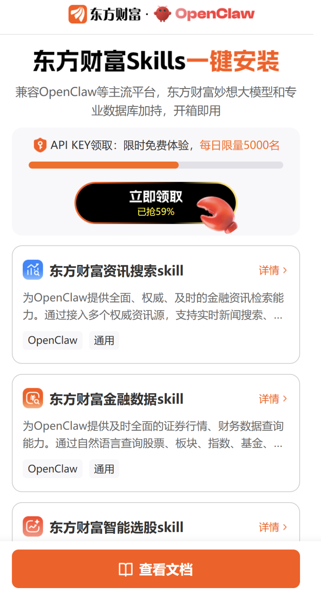

记者丨刘夏菲
编辑丨姜诗蔷 巫燕玲
继腾讯、阿里等十余家互联网大厂先后加入“养虾”大战后，Wind、同花顺、东方财富等金融数据终端大厂也官宣入局。
3月11日，万得官方宣布“万得WindClaw”上线，号称是“会研究、能进化、通数据”的“投资小龙虾”。
紧接着在3月12日凌晨，同花顺连夜官宣了“iFinD金融MCP”的上线，主打“给OpenClaw们配上专业的金融数据”。同时，21世纪经济报道记者获悉，同花顺也在筹备推出自研“iFinD Claw”产品，与WindClaw的定位相似。
当晚，东方财富也发布了“东方财富Skills”，强调为OpenClaw安装“投资决策辅助技能”。
值得一提的是，在2025年DeepSeek大模型火爆“出圈”之后，上述三家公司也分别推出了各自的自研大模型产品。
从“DeepSeek时刻”到“龙虾时刻”，金融数据终端大厂的AI战局持续升温。受访专家指出，未来的软件竞争，或许将是谁能更好地被AI“驱动”的竞争。金融数据终端大厂争相“养虾”，既是顺应行业智能化趋势，也是巩固商业壁垒、延伸服务价值的必然举措。
不过，金融数据终端大厂们沉浸“养虾热”的同时，它们的一部分主要机构客户——券商，却已经开始在内部给“养虾”热潮降温，对OpenClaw的安装与使用做出了明确限制。

Wind、同花顺、东方财富接连官宣“养虾”
两天内，三家金融数据终端大厂分别推出了自己应对“养虾”大战的“武器”。不过，三家公司的产品思路各不相同，有的从“数据”入手，有的从“技能”入手，主动接入OpenClaw；还有的直接在原生OpenClaw的基础上打造“专业版OpenClaw”。
对此，有金融科技人士向记者解释，作为一款具备全流程执行能力的AI智能体，OpenClaw的能力很大程度上依赖于两方面的支撑：一是海量高质量的数据，这是OpenClaw学习和进化的“养料”；二是多样化的技能（Skills），这是它落地应用、解决实际问题的“触手”。因此，许多公司会依据自身优势优先选择从这两种路径来接入OpenClaw。
具体来看，Wind走的是直接打造“专业版OpenClaw”的路线，推出了“WindClaw”，目前仍在公测状态。
据Wind官方介绍，该产品核心亮点包括接入Wind专业金融数据、一键本地部署、学习用户投资习惯持续自主进化等。记者进入公测申请页面发现，其首页功能包括“盯大盘”“盯个股”“盯消息”“股票分析师”“宏观研究员”“策略挖掘机”等。

图：万得WindClaw公测页面
而同花顺则优先选择了从“数据”接入、充当“专业金融数据源”的路线，上线了“iFinD金融MCP”金融数据服务。
对于MCP，同花顺官方解释道，“如果没有MCP数据工具，大模型只会在网络搜索，无法满足投研人员对金融数据的需求。”而iFinD MCP则强调投研级数据库的无缝接入、纯自然语言交互模式、内置专业化数据清洗与Token优化机制等亮点。
据同花顺介绍，iFind MCP服务目前开放的核心模块包括A股股票分析、公募基金分析、宏观经济与行业数据、公告与资讯等。
不过，同花顺也并没有放弃自研“专业版OpenClaw”。记者了解到，同花顺还在计划近期推出“iFinD Claw”，和WindClaw的定位相似，意在实现“开箱即用”。

图：同花顺iFind MCP接入OpenClaw页面
东方财富则是以“技能（Skills）”为抓手，发布了“东方财富Skills”，提出为OpenClaw安装“投资决策辅助技能”。
“Skills是一个标准化文件夹，能够帮助大语言模型助手获得专业的金融数据服务能力。”东方财富官方解释称，给OpenClaw等AI助手“安装”一个技能后，这个AI助手就获得了调用对应金融接口的能力。
据东方财富介绍，安装Skills后，OpenClaw能够实现对市场信息的实时获取、自动化清洗与结构化处理，并能够基于基本面、技术面等多维度指标，对数千只标的进行系统性筛选与分析，辅助投资者高效锁定符合策略的标的。
安装界面显示，东方财富Skills目前主要包括资讯搜索、金融数据、智能选股三个技能包。

图：东方财富Skills安装页面
从“大模型”到“小龙虾”，AI战局再升级
事实上，此次争相接入或自研“小龙虾”，仅是金融数据终端头部“玩家”AI战局的一个缩影。
2025年，“DeepSeek时刻”引爆“大模型热”后，多家头部金融数据终端公司相继发布了自研大模型，包括Wind的“Wind Alice”、东方财富的“妙想”、同花顺的“问财HithinkGPT”等。
对此，21世纪经济报道记者曾报道称，金融数据终端的竞争正从“卖水”转向“卖铲”，过去，终端靠数据资源形成竞争优势；但现在，数据本身已经不算太大的壁垒，大家更需要一个真正好用的研究和交易工具。
如今，“龙虾时刻”到来，对金融数据终端大厂们又意味着什么？
一方面，从OpenClaw作为一款现象级AI Agent本身所带来的变革来看，它可能代表着一种新的软件竞争模式的到来。
中欧基金基金经理宋巍巍向21世纪经济报道记者分析，OpenClaw超越了对话，可以帮用户执行任务。个人电脑、个人手机、个人云端服务器将成为AI Agent，即自己的“数字员工”“私人助理”的搭载主体。
而拥有良好API的软件，能被OpenClaw精确、高效地调用，从而成为Agent生态系统中的一个“器官”。随着OpenClaw类AI Agent的普及，操作系统可能将从“以人为中心”转向 “以智能体为中心” 。
“未来的软件竞争，或许将是谁能更好地被AI‘驱动’的竞争。”宋巍巍表示。
另一方面，从金融数据终端本身的产品迭代逻辑来看，主动接入OpenClaw也是其延伸服务价值的重要选择。
“这些产品的推出，本质是填补数据到应用的‘最后一公里’，以AI智能体打通数据供给与实际使用的链路。”中央财经大学中国金融科技研究中心主任张宁向记者指出。
张宁分析，当前客户需求从“获取数据”升级为“高效用数据”，倒逼服务商从数据供给转向智能工具赋能；而数据厂商凭借底层数据壁垒与场景理解，能快速将智能体与自有数据库深度融合，构建差异化竞争力。
“双向奔赴之下，金融数据终端公司下场布局这类产品，既是顺应行业智能化趋势，也是巩固商业壁垒、延伸服务价值的必然举措。”张宁认为。
多家券商内部收紧“养虾”
尽管金融数据终端大厂们还在密集官宣“养虾”，但它们的一部分主要机构客户——券商，内部却已经开始给“养虾”热潮降温。
记者从多家券商处了解到，目前已有不少券商发布内部合规通知，对OpenClaw的安装与使用做出明确限制，主要涉及在公司设备和内网安装、部署和使用OpenClaw的行为。
从目前具体的通知要求来看，多数券商发布的通知仅为提醒注意相关风险、使用前开展安全评估；也有部分券商直接下达“禁令”，要求即日起暂停安装与使用；还有券商启用审批制，要求因业务需求确需使用的员工进行申请审批。
值得注意的是，3月10日，国家互联网应急中心发布风险提示称，对于金融、能源等关键行业，OpenClaw的部分安全漏洞可导致核心业务数据、商业机密和代码仓库泄露，甚至会使整个业务系统陷入瘫痪，造成难以估量的损失。
张宁提醒，“龙虾”类AI应用将数据调取、分析、操作与指令执行高度整合，在补齐数据到用户使用缺口的同时，也带来了更为隐蔽的安全隐患。
宋巍巍也表示，当AI获得Full Disk Access（完全磁盘访问权限）后，任何安全漏洞都可能导致数据的系统性泄露。此外，OpenClaw的第三方插件生态（ClawHub）亦可能存在安全隐患风险。
具体到金融机构从业者，张宁认为，除了应该小心数据泄密风险、合规追溯风险、知识产权与声誉风险等传统风险外，还要警惕黑箱外延新型风险。
对于黑箱外延新型风险，张宁进一步解释道，应用一体化封装全流程数据操作，打破了传统分段监管与审计轨迹，内网操作行为高度隐匿，传统监测手段难以识别异常流转与外发行为。跨系统整合操作还为注入攻击、插件风险提供了隐蔽通道，风险传导更难溯源，极易引发系统性数据安全事故，这也是多家券商在内网严格禁用此类工具的核心原因。
（本报记者黎雨辰对本文亦有贡献）
出品丨21财经客户端 21世纪经济报道
微信统筹｜江佩霞 编辑丨张嘉钰 见习编辑林芊蔚
21君荐读